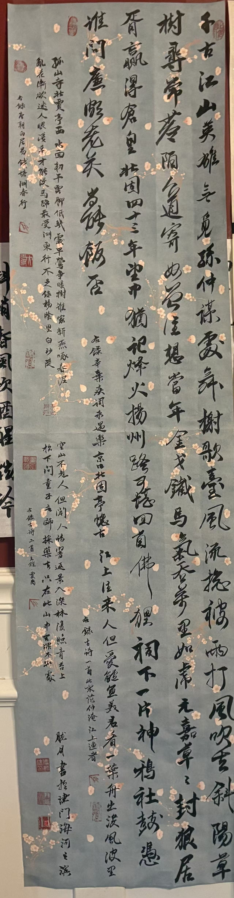

About the work作品介绍
A record of
movement and mind.笔随心动，
墨见精神。
Running script lives between discipline and freedom. Each turn of the brush records an unrepeatable moment—the pressure of the hand, the pace of thought and the quiet force of emotion.行书游走于法度与自由之间。每一次转折，都记录着不可重复的瞬间：手腕的轻重、思绪的疾徐，以及情感沉静的力量。
On view展出中
Red Cliff Rhapsody赤壁赋
Running script · presented in its complete vertical format行书 · 全幅纵向陈列

赤壁赋 · 行书
Chi Bi Fu · Running Script Scroll苏轼《赤壁赋》长卷